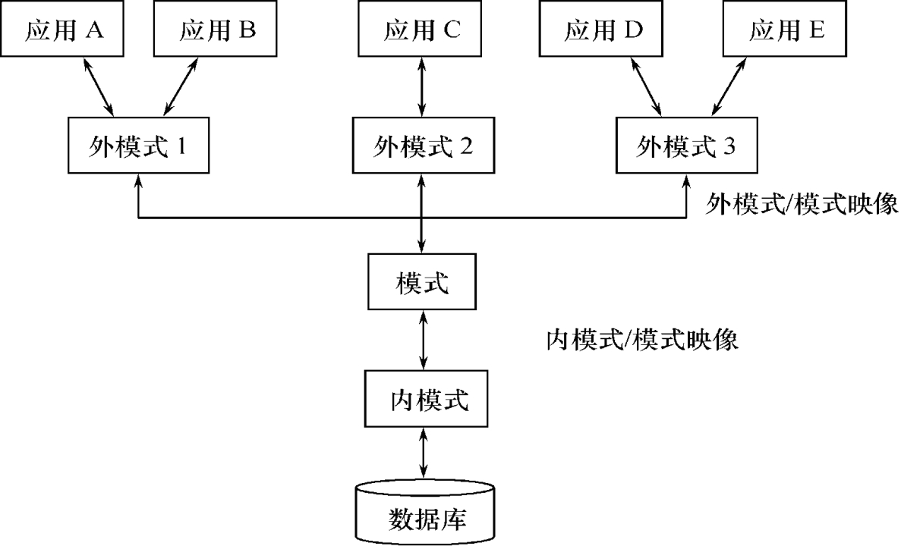

2023.01.14
数据库系统的结构Overview数据库系统模式的概念数据库系统的三级模式结构数据库的二级影响功能与数据独立性外模式／模式映像模式／内模式映像
模式（Schema）/ 逻辑模式
外模式（External Schema）：模式的子集
内模式（Internal Schema） / 存储模式

模式／内模式映象定义了数据全局逻辑结构与存储结构之间的对应关系。
模式／内模式映象是唯一的该映象定义通常包含在模式描述中
保证数据的物理独立性